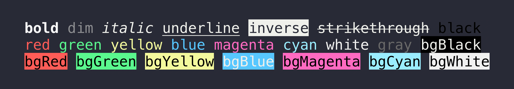

Composable API
Chain foreground colors, background colors, and modifiers in the order that reads best for your code.
Node.js terminal styling
Chalk gives CLI authors an expressive, composable API for colored terminal output with automatic color support detection and no runtime dependencies.
import chalk from 'chalk';
const error = chalk.bold.red;
const warning = chalk.hex('#FFA500');
console.log(error('Error!'));
console.log(warning('Warning!'));Why it exists
Chalk is built for developers who need emphasis, hierarchy, and status in terminal output without extending String.prototype. It chains and nests styles while adapting to the terminal's color capabilities.
Chain foreground colors, background colors, and modifiers in the order that reads best for your code.
Style a substring inside a styled line and let Chalk return to the outer style cleanly.
Automatic detection handles disabled colors, basic colors, 256-color terminals, and Truecolor.
The README highlights a focused implementation with no runtime dependencies.
Quickstart
npm install chalkimport chalk from 'chalk';
console.log(chalk.blue('Hello world!'));Chalk 5 is ESM. The README recommends Chalk 4 for some TypeScript or build-tool setups.
From the repo
The generated page reuses the screenshot shipped in the Chalk repository so the visual example stays grounded in project assets.
